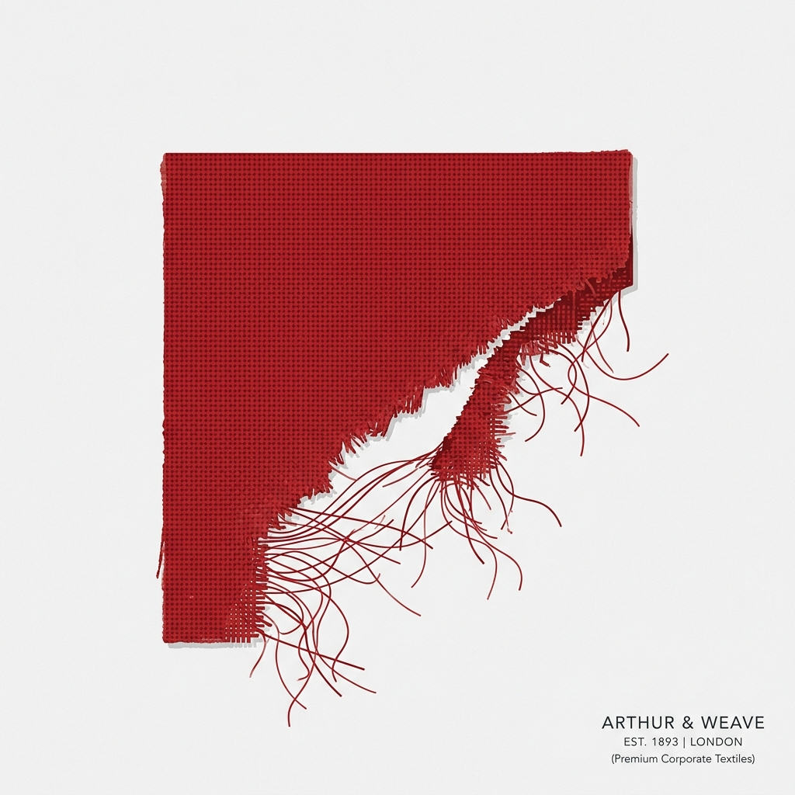

404
Page Not Found
The page you are looking for might have been removed, had its name changed, or is temporarily unavailable. Let's get you back on track.

The page you are looking for might have been removed, had its name changed, or is temporarily unavailable. Let's get you back on track.